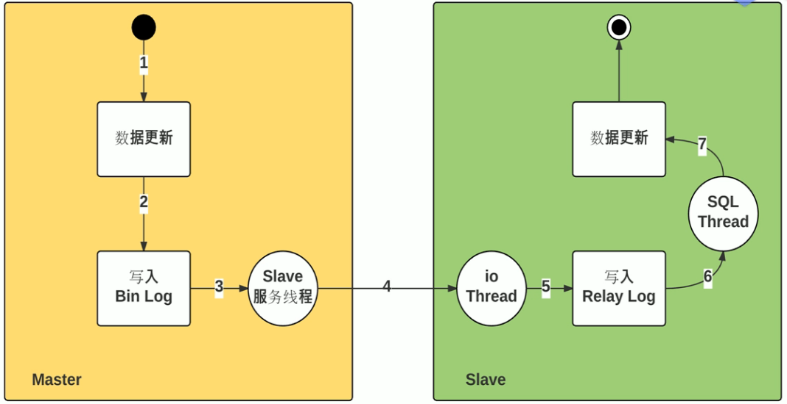

一、数据库原理 1 数据的分类
结构化的数据：即有固定格式和有限长度的数据。例如填的表格就是结构化的数据，国籍：中华人民共和国，民族：汉，性别：男，这都叫结构化数据
非结构化的数据：非结构化的数据越来越多，就是不定长、无固定格式的数据，例如: 网页,图片文件，有时候非常大，有时候很小；例如语音，视频都是非结构化的数据
半结构化数据：比如：XML或者HTML的格式的数据
2 数据库的发展史
使用磁盘文件来存储数据
出现了网状模型、层次模型的数据库
关系型数据库和结构化查询语言
“关系-对象”型数据库
3 数据库管理系统 3.1 相关概念
Database：数据库是数据的汇集，它以一定的组织形式存于存储介质上
DBMS：Database Management System, 是管理数据库的系统软件，它实现数据库系统的各种功能。是数据库系统的核心
DBA：Database Administrator, 负责数据库的规划、设计、协调、维护和管理等工作
Application：应用程序,指以数据库为基础的应用程序
3.2 数据库管理系统的优点
程序与数据相互独立
保证数据的安全、可靠
最大限度地保证数据的正确性
数据可以并发使用并能同时保证一致性
相互关联的数据的集合
较少的数据冗余
3.2.1 RDBMS 关系型数据库
Relational Database Management System,关系模型最初由IBM公司的英国计算机科学家埃德加·科德(Edgar F. Codd)于1969年描述1974年，IBM开始开发系统R，这是一个开发RDBMS原型的研究项目。然而，第一个商业上可用的RDBMS是甲骨文，于1979年由关系软件（现为甲骨文oracle公司）发布
3.2.1.1 关系统型数据库相关概念
关系Relational ：关系就是二维表，其中：表中的行、列次序并不重要
行row：表中的每一行，又称为一条记录record 列column：表中的每一列，称为属性，字段，域field 主键Primary key：PK ,一个或多个字段的组合, 用于惟一确定一个记录的字段，一张表只有一个主键, 主键字段不能为空NULL 唯一键Unique key: 一个或多个字段的组合,用于惟一确定一个记录的字段,一张表可以有多个UK,而且UK字段可以为NULL 域domain：属性的取值范围，如，性别只能是’男’和’女’两个值，人类的年龄只能0-150
3.2.1.2常用关系数据库
MySQL: MySQL, MariaDB, Percona Server
PostgreSQL: 简称为pgsql，EnterpriseDB
Oracle
MSSQL Server
DB2
数据库排行
4 关系型数据库理论 4.1 实体-联系模型E-R 4.2 联系类型
一对一联系(1:1): 在表A或表B中创建一个字段﹐存储另一个表的主键值 如: 一个人只有一个身份证
一对多联系(1:n)：外键, 如: 部门和员工
多对多联系(m:n)：增加第三张表, 如: 学生和课程
4.3 数据的操作
开发工程师 CRUD (增加Create、查询Read或 Retrieve、更新Update、 删除Delete)
数据提取：在数据集合中提取感兴趣的内容。SELECT
数据更新：变更数据库中的数据。INSERT、DELETE、UPDATE
4.4 数据库的正规化分析
数据库规范化，又称数据库或资料库的正规化、标准化，是数据库设计中的一系列原理和技术，以减少数据库中数据冗余，增进数据的一致性。关系模型的发明者埃德加·科德最早提出这一概念，并于1970年代初定义了第一范式、第二范式和第三范式的概念
设计关系数据库时，遵从不同的规范要求，设计出合理的关系型数据库，不同的规范要求被称为不同范式，各种范式呈递次规范，越高的范式数据库冗余越小
目前关系数据库有六种范式：第一范式（1NF）、第二范式（2NF）、第三范式（3NF）、巴德斯科范式（BCNF）、第四范式(4NF）和第五范式（5NF，又称完美范式）。满足最低要求的范式是第一范式（1NF）。在第一范式的基础上进一步满足更多规范要求的称为第二范式（2NF），其余范式以次类推。一般数据库只需满足第三范式(3NF）即可
规则是死的,人是活的,所以范式是否必须遵守,要看业务需要而定
掌握范式的目的是为了在合适的场景下违反范式
4.4.1 第一范式：1NF
无重复的列，每一列都是不可分割的基本数据项，同一列中不能有多个值，即实体中的某个属性不能有多个值或者不能有重复的属性，确保每一列的原子性。除去同类型的字段，就是无重复的列
说明：第一范式（1NF）是对关系模式的基本要求，不满足第一范式（1NF）的数据库就不是关系数据库
4.4.2 第二范式：2NF
第二范式必须先满足第一范式，属性完全依赖于主键，要求表中的每个行必须可以被唯一地区分，通常为表加上每行的唯一标识主键PK，非PK的字段需要与整个PK有直接相关性,即非PK的字段不能依赖于部分主键
4.4.3 第三范式：3NF
满足第三范式必须先满足第二范式属性，非主键属性不依赖于其它非主键属性。第三范式要求一个数据表中不包含已在其它表中已包含的非主关键字信息，非PK的字段间不能有从属关系
4.5 SQL 结构化查询语言简介
SQL：Structure Query Language,结构化查询语言是1974年由Boyce和Chamberlin提出的一个通用的、功能极强的关系性数据库语言
SQL解释器：将SQL语句解释成机器语言
数据存储协议：应用层协议，C/S
S：server, 监听于套接字，接收并处理客户端的应用请求
C：Client
客户端程序接口
应用编程接口
ODBC：Open Database Connectivity
JDBC：Java Data Base Connectivity
二、MySQL安装和基本使用 1 MySQL 介绍 1.1 MySQL系列
MySQL 的三大主要分支
MySQL
Mariadb
Percona Server
官方网址
官方文档
版本演变
MySQL：5.1 –> 5.5 –> 5.6 –> 5.7 –>8.0
MariaDB：5.1 –>5.5 –>10.0–> 10.1 –> 10.2 –> 10.3 –> 10.4 –> 10.5
MySQL被Sun收购后，搞了个过渡的6.0版本，没多久就下线了,后来被Oracle收购后，终于迎来了像样的5.6版本，之后就是5.7、8.0版本。由于6.0版本号已被用过，7.x系列版本专用于NDB Cluster，因而新版本号从8.0开始。
1.2 MySQL的特性
开源免费
插件式存储引擎：也称为”表类型”，存储管理器有多种实现版本，功能和特性可能均略有差别；用户可根据需要灵活选择,Mysql5.5.5开始innoDB引擎是MYSQL默认引擎
MyISAM ==> Aria
单进程，多线程 诸多扩展和新特性
提供了较多测试组件
2 MySQL 安装方式介绍和快速安装 2.1 yum 安装 mysql最新源
1 2 3 4 5 6 7 8 9 10 11 12 13 14 15 16 17 18 19 20 21 22 23 24 25 26 27 28 29 30 31 32 33 34 35 36 37 38 39 40 41 42 43 44 45 46 47 [root@rocky01 ~]id is 13'help;' or '\h' for help . Type '\c' to clear the current input statement.for Linux on x86_64 (Source distribution)id : 13in use''
2.2 初始化脚本提高安全性 运行脚本：[root@centos7 ~]# mysql_secure_installation
设置数据库管理员root口令 禁止root远程登录 删除anonymous（匿名）用户帐号 删除test数据库
3 MySQL 组成和常用工具 3.1 客户端程序
mysql: 基于mysql协议交互式或非交互式的CLI工具
mysqldump：备份工具，基于mysql协议向mysqld发起查询请求，并将查得的所有数据转换成insert等写操作语句保存文本文件中
mysqladmin：基于mysql协议管理mysqld
mysqlimport：数据导入工具
MyISAM存储引擎的管理工具：
myisamchk：检查MyISAM库
myisampack：打包MyISAM表，只读
3.2 服务器端程序
mysqld_safe
mysqld
mysqld_multi 多实例 ，示例：mysqld_multi –example
3.3 用户账号
说明：
mysql用户账号由两部分组成：
1 2 3 4 'USERNAME' @'HOST' '10.0.0.100' '10.0.0.%' '%'
3.4 mysql 客户端命令 3.4.1 mysql 运行命令类型
客户端命令：本地执行，每个命令都完整形式和简写格式
服务端命令：通过mysql协议发往服务器执行并取回结果，命令末尾都必须使用命令结束符号 ，默认为分号
范例：查看版本 1 2 3 4 5 6 7 8 9 10 11 12 for Linux on x86_64 (Source distribution)in set (0.00 sec)
3.4.2 mysql 使用模式
1 2 3 mysql -uUSERNAME -pPASSWORD < /path/somefile.sqlcat /path/somefile.sql |mysql -uUSERNAME -pPASSWORDsource /path/from/somefile.sql
3.4.3 mysql命令使用格式 1 mysql [OPTIONS] [database]
mysql客户端常用选项：
-A, –no-auto-rehash 禁止补全
-u, –user= 用户名,默认为root -h, –host= 服务器主机,默认为localhost -p, –passowrd= 用户密码,建议使用-p,默认为空密码 -P, –port= 服务器端口 -S, –socket= 指定连接socket文件路径
-D, –database= 指定默认数据库
-C, –compress 启用压缩
-e “SQL” 执行SQL命令 -V, –version 显示版本
-v –verbose 显示详细信息
–print-defaults 获取程序默认使用的配置
范例：修改提示符 1 2 3 4 5 6 7 8 9 10 "[\\u@\\h \\d]>\\_"
范例：配置所有MySQL 客户端的自动登录 1 2 3 4 [root@rocky01 ~]
3.4.4 mysqladmin命令 mysqladmin 命令格式
1 mysqladmin [OPTIONS] command command ....
使用范例 1 2 3 4 5 6 7 8 9 10 11 12 13 14 15 16 17 "654321"
3.4.5 mycli MyCLI 是基于Python开发的MySQL的命令行工具，具有自动完成和语法突出显示功能
1 2 3 4 5 6 7
3.5 服务器端配置 3.5.1 服务器端配置文件
服务器端(mysqld)：工作特性有多种配置方式
1、命令行选项：
2、配置文件：类ini格式,集中式的配置，能够为mysql的各应用程序提供配置信息
服务器端配置文件：
1 2 3 /etc/my.cnf
配置文件格式：
1 2 3 4 5 6 7 8 [mysqld]
[client] 里面的内容可以被 mysql,mysqladmin,mysqldump 等客户端读取的，而 [mysql]里的内容只能给mysql客户端读取 两者都配置了一样的参数时，遵循覆盖原则，选取最下面的 MySQL的客户端都是可以在命令行指定连接参数的，如配置文件的参数错误，可直接在命令行输入该参数覆盖参数文件参数
说明：
_和- 相同 1，ON，TRUE意义相同 0，OFF，FALSE意义相同,无区分大小写
3.5.2 socket 连接说明
服务器监听的两种 socket 地址：
ip socket: 监听在tcp的3306端口，支持远程通信 ，侦听3306/tcp端口可以在绑定有一个或全部接口IP上
unix sock: 监听在sock文件上，仅支持本机通信, 如：/var/lib/mysql/mysql.sock)
说明：host为localhost 时自动使用unix sock
范例：MySQL的端口 1 2 3 4 5 6 7 8 9 10 11 12 13 14 15 16 17 [root@localhost (none)]> SHOW VARIABLES LIKE 'port' ;in set (0.01 sec)'mysqlx_port' ;in set (0.00 sec)
3.5.3 关闭mysqld网络连接
只侦听本地客户端， 所有客户端和服务器的交互都通过一个socket文件实现，socket的配置存放在/var/lib/mysql/mysql.sock） 可在/etc/my.cnf修改
范例：
1 2 3 vim /etc/my.cnf
4 通用二进制格式安装 MySQL 实战案例：手动安装MySQL 5.7、MySQL8.0 （1）安装相关包 （2）创建用户和组 1 2 groupadd mysql
（3）准备程序文件 1 2 3 4 5 6
（5）准备环境变量 1 2 [root@rocky01 ~]
（6）准备配置文件 1 2 3 4 5 6 7 8 9 [root@rocky01 ~]
（7）初始化数据库文件并提取root 方式****1: 生成随机密码
1 2 3 4 5 6 [root@rocky01 ~]for root@localhost: L!fdbgQpH2AQ
方式****2: 生成 root 空密码
1 mysqld --initialize-insecure --user=mysql --datadir=/data/mysql
（8）准备服务脚本和启动 1 2 3 4 [root@rocky01 ~]
（9）修改口令
1 2 3 4 5 6 7 command line interface can be insecure.in plain text, use ssl connection to ensure password safety.
（10）测试登录 1 2 3 4 5 6 7 8 9 10 11 [root@rocky01 ~]command line interface can be insecure.id is 8while loading shared libraries: libtinfo.so.5: cannot open shared object file: No such file or directory
实战案例：一键安装MySQL5.7、MySQL8.0脚本 1 2 3 4 5 6 7 8 9 10 11 12 13 14 15 16 17 18 19 20 21 22 23 24 25 26 27 28 29 30 31 32 33 34 35 36 37 38 39 40 41 42 43 44 45 46 47 48 49 50 51 52 53 54 55 56 57 58 59 60 61 62 63 64 65 66 67 68 69 70 71 72 73 74 75 76 77 78 pwd `'mysql-8.0.31-linux-glibc2.12-x86_64.tar.xz' 'echo -e \E[01;31m' '\E[0m' check if [ $UID -ne 0 ]; then "当前用户不是root,安装失败" false exit 1fi cd $SRC_DIR if [ ! -e $MYSQL ];then $COLOR "缺少${MYSQL} 文件" $END $COLOR "请将相关软件放在${SRC_DIR} 目录下" $END exit elif [ -e /usr/local/mysql ];then "数据库已存在，安装失败" false exit else return fi install_mysql $COLOR "开始安装MySQL数据库..." $END $MYSQL -C /usr/local/echo $MYSQL | sed -nr 's/^(.*[0-9]).*/\1/p' `ln -s /usr/local/$MYSQL_DIR /usr/local/mysqlchown -R root.root /usr/local/mysql/id mysql &> /dev/null || { useradd -s /sbin/nologin -r mysql ; action "创建mysql用户" ; }echo 'PATH=/usr/local/mysql/bin/:$PATH' > /etc/profile.d/mysql.shln -s /usr/local/mysql/bin/* /usr/bin/cat > /etc/my.cnf <<-EOF [mysqld] server-id=`hostname -I|cut -d. -f4` log-bin datadir=/data/mysql socket=/data/mysql/mysql.sock log-error=/data/mysql/mysql.log pid-file=/data/mysql/mysql.pid [client] socket=/data/mysql/mysql.sock EOF mkdir /datacp /usr/local/mysql/support-files/mysql.server /etc/init.d/mysqld$COLOR "数据库启动失败，退出!" $END ;exit ; }sleep 3$MYSQL_ROOT_PASSWORD &>/dev/null"数据库安装完成"
三、SQL 语言 1 关系型数据库的常见组件
数据库：database 表的集合，物理上表现为一个目录
表：table，行：row 列：column
索引：index
视图：view，虚拟的表
存储过程：procedure
存储函数：function
触发器：trigger
事件调度器：event scheduler，任务计划
用户：user
权限：privilege
2 SQL 语法标准 2.1 SQL 语言规范
在数据库系统中，SQL 语句不区分大小写，建议用大写
SQL语句可单行或多行书写，默认以 “ ; “ 结尾
关键词不能跨多行或简写
用空格和TAB 缩进来提高语句的可读性
子句通常位于独立行，便于编辑，提高可读性
注释：
1 2 3 4 5 6 7
2.2 数据库对象和命名
数据库的组件 **(对象 ：
数据库、表、索引、视图、用户、存储过程、函数、触发器、事件调度器等
命名规则：
必须以字母开头，后续可以包括字母,数字和三个特殊字符（# _ $）
不要使用MySQ
2.3 SQL语句分类
DDL: Data Defination Language 数据定义语言
CREATE，DROP，ALTER
DML: Data Manipulation Language 数据操纵语言
INSERT，DELETE，UPDATE
软件开发：CRUD
DQL：Data Query Language 数据查询语言
SELECT
DCL：Data Control Language 数据控制语言
GRANT，REVOKE
TCL：Transaction Control Language 事务控制语言
COMMIT，ROLLBACK，SAVEPOINT
2.4 SQL语句构成 关健字Keyword组成子句clause，多条clause组成语句
示例：一组SQL语句由三个子句构成，SELECT,FROM和WHERE是关键字
1 2 3 SELECT *
范例：查看SQL帮助 1 2 3 4 5 6 7 8 9 10 11 12 13 [root@localhost (none)]> help contentsfor help about help category: "Contents" type 'help <item>' , where <item> is one of the following
2.5 字符集和排序 早期MySQL版本默认为 latin1，从MySQL8.0开始默认字符集已经为 utf8mb4
查看支持所有字符集 1 2 SHOW CHARACTER SET;
查看当前使用的字符集 1 SHOW VARIABLES LIKE '%char%' ;
查看支持所有排序规则 1 2 3 4 SHOW COLLATION;
查看当前使用的排序规则 1 SHOW VARIABLES LIKE 'collation%' ;
设置服务器默认的字符集 1 2 3 vim /etc/my.cnf
设置客户端默认的字符集 1 2 3 4 5 6 7 vim /etc/my.cnf
3 管理数据库 3.1 创建数据库 1 2 3 4 5 CREATE DATABASE|SCHEMA [IF NOT EXISTS] 'DB_NAME' 'character set name' 'collate name' ;
范例：常见用法 1 2 3 4 5 6 7 8 9 10 11 12 13 14 15 16 17 18 19 20 21 22 23 24 25 26 27 28 29 'N' */ |in set (0.00 sec)set (0.00 sec)'t create database ' db1'; database exists | +-------+------+----------------------------------------------+ 1 row in set (0.00 sec)
范例：指定字符集创建数据库 1 2 3 4 5 6 7 8 9 'utf8' ;set utf8 collate utf8_bin;
3.2 修改数据库 1 ALTER DATABASE DB_NAME character set utf8;
范例：使用方法
1 2 3 set utf8 COLLATE utf8_bin;
3.3 删除数据库 1 DROP DATABASE|SCHEMA [IF EXISTS] 'DB_NAME' ;
范例：使用方法
1 2 3 4 5 6 7 8 [root@localhost (none)]> drop database db1;
3.4 查看数据库列表 范例：
1 2 3 4 5 6 7 8 9 10 [root@localhost (none)]> show databases;in set (0.00 sec)
4 数据类型
数据类型 ：
数据类型
MySQL****支持多种内置数据类型
选择正确的数据类型对于获得高性能至关重要，三大原则：
更小的通常更好，尽量使用可正确存储数据的最小数据类型
简单就好，简单数据类型的操作通常需要更少的CPU周期
尽量避免NULL，包含为NULL的列，对MySQL更难优化
4.1 整数型
tinyint(m) 1个字节 范围(-128~127)
smallint(m) 2个字节 范围(-32768~32767)
mediumint(m) 3个字节 范围(-8388608~8388607)
int(m) 4个字节 范围(-2147483648~2147483647)
bigint(m) 8个字节 范围(+-9.22*10的18次方)
上述数据类型，如果加修饰符unsigned（取消负数，全是正数）后，则最大值翻倍
如：tinyint unsigned的取值范围为(0~255)
int(m)里的m是表示SELECT查询结果集中的显示宽度 ，并不影响实际的取值范围，规定了MySQL的一些交互工具（例如MySQL命令行客户端）用来显示字符的个数。对于存储和计算来说，Int(1)和Int(20)是相同的
BOOL，BOOLEAN：布尔型，是TINYINT(1)的同义词。zero值被视为假，非zero值视为真
4.2 浮点型(float和double)，近似值
float(m,d) 单精度浮点型 8位精度(4字节) m总个数，d小数位, 注意: 小数点不占用总个数
double(m,d) 双精度浮点型16位精度(8字节) m总个数，d小数位, 注意: 小数点不占用总个数
设一个字段定义为float(6,3)，如果插入一个数123.45678,实际数据库里存的是123.457，但总个数还以实际为准，即6位
4.3 定点数 4.4 字符串(char,varchar,text)
char(n) 固定长度，最多255个字符,注意不是字节
varchar(n) 可变长度，最多65535个字符
tinytext 可变长度，最多255个字符
text 可变长度，最多65535个字符
mediumtext 可变长度，最多2的24次方-1个字符
longtext 可变长度，最多2的32次方-1个字符
BINARY(M) 固定长度，可存二进制或字符，长度为0-M字节
VARBINARY(M) 可变长度，可存二进制或字符，允许长度为0-M字节
内建类型：ENUM枚举, SET集合
char类型的字符串检索速度要比varchar类型的快
varchar查询速度快于text
char和
面试题: VARCHAR(50) 能存放几个 UTF8 编码的汉字？
存放的汉字个数与版本相关。
mysql 4.0以下版本，varchar(50) 指的是 50 字节，如果存放 UTF8 格式编码的汉字时（每个汉字3字节），只能存放16 个。
mysql 5.0以上版本，varchar(50) 指的是 50 字符，无论存放的是数字、字母还是 UTF8 编码的汉字，都可以存放 50 个。
4.5 二进制数据BLOB
BLOB和text存储方式不同，TEXT以文本方式存储，英文存储区分大小写，而Blob以二进制方式存储，不分大小写
BLOB存储的数据只能整体读出
TEXT可以指定字符集，BLOB不用指定字符集
4.6 日期时间类型
date 日期 ‘2008-12-2’
time 时间 ‘12:25:36’
datetime 日期时间 ‘2008-12-2 22:06:44’
timestamp 自动存储记录修改时间
YEAR(2), YEAR(4)：年份
timestamp 此字段里的时间数据会随其他字段修改的时候自动刷新，这个数据类型的字段可以存放这条记录最后被修改的时间
4.7 修饰符
适用所有类型的修饰符：
NULL 数据列可包含NULL值，默认值
NOT NULL 数据列不允许包含NULL值，相当于网站注册表中的 * 为必填选项
DEFAULT 默认值
PRIMARY KEY 主键，所有记录中此字段的值不能重复，且不能为NULL
UNIQUE KEY 唯一键，所有记录中此字段的值不能重复，但可以为NULL
CHARACTER SET name 指定一个字符集
适用数值型的修饰符：
AUTO_INCREMENT 自动递增，适用于整数类型, 必须作用于某个 key 的字段,比如primary key
UNSIGNED 无符号
5 DDL 语句 5.1 create 创建表 （1） 直接创建
1 2 3 4 5 6 7 8 9 CREATE TABLE [IF NOT EXISTS] 'tbl_name' (col1 type1 修饰符, col2 type2 修饰符, ...)
注意：
Storage Engine是指表类型，也即在表创建时指明其使用的存储引擎
同一库中不同表可以使用不同的存储引擎
同一个库中表建议要使用同一种存储引擎类型
范例：用法 1 2 3 4 5 6 7 id tinyint unsigned primary key auto_increment ,
（2） 通过查询现存表创建
新表会被直接插入查询而来的数据
1 CREATE [TEMPORARY] TABLE [IF NOT EXISTS] tbl_name [(create_definition,...)] [table_options] [partition_options] select_statement
范例：用法 1 2 3 [root@localhost zabbix]> create table userhost select user,host from mysql.user;
（3） 通过复制现存的表的表结构创建
不复制数据
1 CREATE [TEMPORARY] TABLE [IF NOT EXISTS] tbl_name { LIKE old_tbl_name | (LIKE old_tbl_name) }
范例：用法 1 2 [root@localhost zabbix]> create table user like student;
5.2 show 表查看 查看表 1 SHOW TABLES [FROM db_name]
查看表创建命令 1 SHOW CREATE TABLE tbl_name
查看表结构 1 2 3 4 5
查看表状态 1 2 3 4 5 'tbl_name' \G
查看支持的engine类型 范例：用法 1 2 3 4 5 6 7 8 9 10 11 12 13 14 15 16 17 18 19 20 21 22 23 24 25 26 27 28 29 30 31 32 33 34 35 36 37 38 39 40 41 42 43 44 45 46 47 48 49 50 51 52 53 id ` tinyint unsigned NOT NULL AUTO_INCREMENT,id `)in set (0.00 sec)id | tinyint unsigned | NO | PRI | NULL | auto_increment |in set (0.00 sec)set (0.00 sec)'student' \Gin set (0.00 sec)
5.3 修改和删除表 alter 修改表 1 2 3 4 5 6 7 ALTER TABLE 'tbl_name'
drop 删除表 1 DROP TABLE [IF EXISTS] 'tbl_name' ;
6 DML 语句 DML: INSERT, DELETE, UPDATE
6.1 INSERT 语句
功能：一次插入一行或多行数据
1 2 3 4 5 6 7 8 9 10 11 12 13 14 15 16 17 18 19 20 21 22 23 expr | DEFAULT},...),(...),...expr expr ] ... ]expr | DEFAULT}, ...expr expr ] ... ]expr expr ] ... ]
简化写法：
1 INSERT tbl_name [(col1,...)] VALUES (val1,...), (val21,...)
范例：用法 1 2 3 4 5 6 7 8 9 10 11 12 13 14 15 16 17 18 19 20 21 22 23 24 25 26 27 28 29 30 31 32 33 34 id ,name,gender,age) values(1,'Rye' ,'M' ,20);'Rye' ,'M' ,20);'Rye2' ,'M' ,21),('Rye3' ,'M' ,22);set name='Rye4' ,gender='F' ;id | name | gender | age |in set (0.00 sec)
6.2 UPDATE 语句
语法：
1 2 3 4 5 UPDATE [LOW_PRIORITY] [IGNORE] table_reference
注意：一定要有限制条件，否则将修改所有行的指定字段
范例：用法 1 2 3 4 5 6 7 8 9 10 11 12 13 14 15 16 set age=23 where id =4;id | name | gender | age |in set (0.00 sec)
6.3 DELETE 语句
删除表中数据，但不会自动缩减数据文件的大小。
语法:
1 2 3 4 5 DELETE [LOW_PRIORITY] [QUICK] [IGNORE] FROM tbl_name
注意：一定要有限制条件，否则将清空表中的所有数据
可利用mysql 选项避免此错误：
1 2 3 4 5 6 7 8 9 10
如果想清空表，保留表结构，也可以使用下面语句，此语句会自动缩减数据文件的大小。
1 TRUNCATE TABLE tbl_name;
缩减表大小
范例：用法 1 2 3 4 5 6 7 8 9 10 11 12 where age>=21;id | name | gender | age |in set (0.00 sec)
7 DQL 语句（select）
7.1 单表操作
语法：
1 2 3 4 5 6 7 8 9 10 11 12 13 SELECTexpr | position}expr | position}
说明：
字段显示可以使用别名：
col1 AS alias1, col2 AS alias2, …
WHERE子句 ：指明过滤条件以实现”选择”的功能：
过滤条件：布尔型表达式
算术操作符：+, -, *, /, %
比较操作符：=,<=>（相等或都为空）, <>, !=(非标准SQL), >, >=, <, <=
范例查询: BETWEEN min_num AND max_num
不连续的查询: IN (element1, element2, …)
空查询: IS NULL, IS NOT NULL
DISTINCT 去除重复行，范例：SELECT DISTINCT gender FROM students;
模糊查询: LIKE 使用 % 表示任意长度的任意字符 _ 表示任意单个字符
RLIKE：正则表达式，索引失效，不建议使用
REGEXP：匹配字符串可用正则表达式书写模式，同上
逻辑操作符：NOT，AND，OR，XOR
GROUP BY：根据指定的条件把查询结果进行”分组”以用于做”聚合”运算
常见聚合函数： count(), sum(), max(), min(), avg(),注意:聚合函数不对null统计 HAVING: 对分组聚合运算后的结果指定过滤条件 一旦分组 group by ，select语句后只跟分组的字段，聚合函数
ORDER BY: 根据指定的字段对查询结果进行排序
LIMIT [[offset,]row_count]：对查询的结果进行输出行数数量限制,跳过offset,显示row_count行,offset默为值为0
对查询结果中的数据请求施加”锁”
FOR UPDATE: 写锁，独占或排它锁，只有一个读和写操作
LOCK IN SHARE MODE: 读锁，共享锁，同时多个读操作
范例：字段别名 1 2 3 4 5 6 7 8 9 MariaDB [hellodb]> select stuid 学员ID,name as 姓名,gender 性别 from students;
范例：判断是否为NULL 1 2 3 4 5 6 7 8 9 10 11 MariaDB [hellodb]> select * from students where classid is null;in set (0.002 sec)where classid is not null;
范例：去重 1 2 3 4 5 6 7 8 9 10 11 MariaDB [hellodb]> select distinct gender from students ;in set (0.001 sec)
范例：SQL 注入攻击 1 2 3 4 select * from user where name='admin' and password='' or '1' ='1' ;where name='admin' and password='' or '1=1' ;where name='admin' ; -- ' and password=' 123'; select * from user where name=' admin'; # ' and password='123' ;
范例：分页查询 1 2 3 4 5 6 7 8 9 10 11 12 13 14 15 16 17 18 19 20 21 22 limit 0,3;limit 3;in set (0.00 sec)limit 1,3;in set (0.00 sec)
范例：聚合函数 1 2 3 4 5 6 7 mysql> select sum (age)/count(*) from students where gender ='M' ;sum (age)/count(*) |in set (0.00 sec)
范例：分组统计 1 2 3 4 5 6 7 8 9 10 11 12 13 14 15 16 17 18 19 20 21 22 mysql> select classid, count(*) 数量 from students group by classid;in set (0.00 sec)where classid > 3 group by classid having 平均年龄 >30 ;'M' ;
范例：排序 1 2 3 4 5 6 7 8 9 10 11 12 13 14 15 16 17 18 19 20 limit 3;in set (0.00 sec)limit 3,2;in set (0.00 sec)
范例：分组和排序 1 2 3 4 5 6 7 8 9 10 11 12 13 14 15 mysql> select classid,count(*) 数量 from students group by classid order by 数量in set (0.00 sec)
7.2 多表查询 多表查询，即查询结果来自于多张表
子查询：在SQL语句嵌套着查询语句，性能较差，基于某语句的查询结果再次进行的查询
联合查询：UNION
交叉连接：笛卡尔乘积 CROSS JOIN
内连接：
等值连接：让表之间的字段以”等值”建立连接关系
不等值连接
自然连接：去掉重复列的等值连接 , 语法: FROM table1 NATURAL JOIN table2;
左外连接：FROM tb1 LEFT JOIN tb2 ON tb1.col=tb2.col
右外连接：FROM tb1 RIGHT JOIN tb2 ON tb1.col=tb2.col
完全外连接: FROM tb1 FULL OUTER JOIN tb2 ON tb1.col=tb2.col 注意:MySQL 不支持此SQL语法
7.2.1 子查询
select 的执行结果，被其它SQL调用
常用范例
1 2 3 set Age=(SELECT avg(Age) FROM teachers) where stuid=25;
7.2.2 联合查询
联合查询 Union 实现的条件,多个表的字段数量相同,字段名和数据类型可以不同,但一般数据类型是相同的
常用范例
1 2 3 4 5
7.2.3 交叉连接
cross join 即多表的记录之间做笛卡尔乘积组合，并且多个表的列横向合并相加, “雨露均沾”
比如: 第一个表3行4列,第二个表5行6列,cross join后的结果为3*5=15行,4+6=10列
交叉连接生成的记录可能会非常多,建议慎用
常用范例
1 2 3 4 5 6 join teachers;
7.2.4 内连接
inner join 内连接取多个表的交集
常用范例
1 2 join teachers on students.teacherid=teachers.tid;
7.2.5 左和右外连接
左连接: 以左表为主根据条件查询右表数据﹐如果根据条件查询右表数据不存在使用null值填充
右连接: 以右表为主根据条件查询左表数据﹐如果根据条件查询左表数据不存在使用null值填充
常用范例
1 2 3 4 5 join teachers as t on s.teacherid=t.tid;join teachers t on s.teacherid=t.tid where t.tid is null;
7.2.6 完全外连接
MySQL 不支持完全外连接full outer join语法
常用范例
1 2 3 4 join teachers on students.teacherid=teachers.tidjoin teachers on students.teacherid=teachers.tid;
7.2.7 自连接
自连接, 即表自身连接自身
常用范例
1 2 3 4 5 6 7 8 9 10 11 12 13 14 15 16 17 18 19 20 21 22 id | name | leaderid |in set (0.00 sec)join emp as l on e.leaderid=l.id;in set (0.00 sec)
7.3 SELECT 语句处理的顺序
SELECT语句的执行流程：
1 FROM Clause --> WHERE Clause --> GROUP BY --> HAVING Clause -->SELECT --> ORDER BY --> LIMIT
8 VIEW 视图
视图：虚拟表，保存有实表的查询结果，相当于别名
利用视图,可以隐藏表的真实结构,在程序中利用视图进行查询,可以避免表结构的变化,而修改程序,降低程序和数据库之间的耦合度
创建方法 1 2 3 CREATE VIEW view_name [(column_list)]
查看视图定义 1 2 SHOW CREATE VIEW view_name
删除视图 1 2 3 DROP VIEW [IF EXISTS]
9 FUNCTION 函数 函数：分为系统内置函数和自定义函数
创建UDF
1 2 3 4 CREATE [AGGREGATE] FUNCTION function_name(parameter_name type ,[parameter_name type ,...])
说明：
参数可以有多个,也可以没有参数
无论有无参数，小括号（）是必须的
必须有且只有一个返回值
查看函数列表 查看函数定义 1 SHOW CREATE FUNCTION function_name
删除UDF 1 DROP FUNCTION function_name
调用自定义函数语法 1 SELECT function_name(parameter_value,...)
注意：
1 2 3 4 5 6 7 8 9 10 11 12 'log_bin_trust_function_creators' ;in set (0.00 sec)set global log_bin_trust_function_creators=ON;
使用范例 1 2 3 4 5 6 7 8 9 10 11 "Hello World" ;id SMALLINT UNSIGNED) RETURNS VARCHAR(20)id ;
10 PROCEDURE 存储过程
存储过程：多表SQL的语句的集合，可以独立执行，存储过程保存在mysql.proc表中
存储过程优势
存储过程把经常使用的SQL语句或业务逻辑封装起来,预编译保存在数据库中,当需要时从数据库中直接调
用,省去了编译的过程，提高了运行速度，同时降低网络数据传输量
存储过程与自定义函数的区别
存储过程实现的过程要复杂一些,而函数的针对性较强
存储过程可以有多个返回值,而自定义函数只有一个返回值
存储过程一般可独立执行,而函数往往是作为其他SQL语句的一部分来使用
无参数的存储过程执行过程中可以不加(),函数必须加 ( )
创建存储过程 1 2 3 4 5 6 CREATE PROCEDURE sp_name ([ proc_parameter [,proc_parameter ...]])type type 表示参数的类型
查看存储过程列表 调用存储过程 1 CALL sp_name ([ proc_parameter [,proc_parameter ...]])
删除存储过程 1 DROP PROCEDURE [IF EXISTS] sp_name
使用范例 1 2 3 4 5 6 7 8 9 10 11 12 delimiter //sum = 0;sum = @sum +@i; sum ;
11 TRIGGER 触发器
触发器的执行不是由程序调用，也不是由手工启动，而是由事件来触发、激活从而实现执行
使用范例 1 2 3 4 5 6 7 8 9 10 11 12 13 14 15 16 17 18 19 20
12 Event 事件
事件（event）是MySQL在相应的时刻调用的过程式数据库对象。一个事件可调用一次，也可周期性的启动，它由一个特定的线程来管理的，也就是所谓的”事件调度器”。
事件和触发器类似，都是在某些事情发生的时候启动。当数据库上启动一条语句的时候，触发器就启动了，而事件是根据调度事件来启动的。由于它们彼此相似，所以事件也称为临时性触发器。
事件取代了原先只能由操作系统的计划任务来执行的工作，而且MySQL的事件调度器可以精确到每秒钟执行一个任务，而操作系统的计划任务（如：Linux下的CRON或Windows下的任务计划）只能精确到每分钟执行一次。
事件的优缺点
优点：一些对数据定时性操作不再依赖外部程序，而直接使用数据库本身提供的功能，可以实现每秒钟执行一个任务，这在一些对实时性要求较高的环境下就非常实用
缺点：定时触发，不可以直接调用
1 2 3 4 5 6 7 8 in set (0.00 sec)
13 MySQL 用户管理 相关数据库和表 1 2 元数据数据库：mysql
用户帐号 1 2 3 4 5 6 7 'USERNAME' @'HOST' 'HOST' : 主机名： user1@'web1.magedu.org' '172.16.%.%' '192.168.1.%' '10.0.0.0/255.255.0.0'
创建用户 1 2 3 4 CREATE USER 'USERNAME' @'HOST' [IDENTIFIED BY 'password' ]；'10.0.0.%' identified by 123456;test @'10.0.0.0/255.255.255.0' identified by '123456' ;
用户重命名 1 RENAME USER old_user_name TO new_user_name;
删除用户 1 DROP USER 'USERNAME' @'HOST'
范例：删除默认的空用户 1 DROP USER '' @'localhost' ;
范例：MySQL5.7和8.0 破解root密码 1 2 3 4 5 6 7 8 9 10 11 12 13 14 15 16 17 18 19 20 21 set authentication_string='' where user='root' and host='localhost' ; 'localhost' identified by 'ubuntu' ;set password for root@'localhost' ='ubuntu' ;
范例：删库跑路之清空root密码方法 1 2 3 4
14 权限管理和DCL语句 GRANT 授权
1 2 3 4 5 6 7 8 9 10 11 GRANT priv_type [(column_list)],... ON [object_type] priv_level TO 'user' @'host' 'password' ] [WITH GRANT OPTION];
使用范例
1 2 3 4 5 6 7 8 9 GRANT ALL ON wordpress.* TO wordpress@'10.0.0.%' ;'someuser' @'somehost' ;'root' @'10.0.0.%' WITH GRANT OPTION;'192.168.8.%' IDENTIFIED BY '123456' ;'root' @'192.168.8.%' IDENTIFIED BY '123456' WITH GRANT OPTION;
REVOKE 取消权限
1 REVOKE priv_type [(column_list)] [, priv_type [(column_list)]] ... ON [object_type] priv_level FROM user [, user] ...
使用范例
1 REVOKE DELETE ON *.* FROM 'testuser' @'172.16.0.%' ;
查看指定用户获得的授权 1 2 3 Help SHOW GRANTS'user' @'host' ;
注意 ：
MariaDB服务进程启动时会读取mysql库中所有授权表至内存
(1) GRANT或REVOKE等执行权限操作会保存于系统表中，MariaDB的服务进程通常会自动重读授权表，使之生效
(2) 对于不能够或不能及时重读授权表的命令，可手动让MariaDB的服务进程重读授权表：
mysql> FLUSH PRIVILEGES;
四、MySQL 架构和性能优化 1 存储引擎
MySQL中的数据用各种不同的技术存储在文件（或者内存）中。这些技术中的每一种技术都使用不同的存储机制、索引技巧、锁定水平并且最终提供广泛的不同的功能和能力,此种技术称为存储擎,MySQL 支持多种存储引擎其中目前应用最广泛的是InnoDB和MyISAM两种
1.1 MyISAM 存储引擎
MyISAM 引擎特点
不支持事务 表级锁定 读写相互阻塞，写入不能读，读时不能写 只缓存索引 不支持外键约束 不支持聚簇索引 读取数据较快，占用资源较少 不支持MVCC（多版本并发控制机制）高并发 崩溃恢复性较差 MySQL5.5.5 前默认的数据库引擎
MyISAM 存储引擎适用场景
只读（或者写较少）
表较小（可以接受长时间进行修复操作）
MyISAM 引擎文件
tbl_name.frm 表格式定义 tbl_name.MYD 数据文件 tbl_name.MYI 索引文件
1.2 InnoDB 引擎
InnoDB引擎特点
行级锁 支持事务，适合处理大量短期事务 读写阻塞与事务隔离级别相关 可缓存数据和索引 支持聚簇索引 崩溃恢复性更好 支持MVCC高并发 从MySQL5.5后支持全文索引 从MySQL5.5.5开始为默认的数据库引擎
InnoDB****数据库文件
所有InnoDB表的数据和索引放置于同一个表空间中
1 2 数据文件：ibdata1, ibdata2,存放在datadir定义的目录下
1 2 3 两类文件放在对应每个数据库独立目录中
1.3 管理存储引擎 查看mysql支持的存储引擎 查看当前默认的存储引擎 1 show variables like '%storage_engine%' ;
设置默认的存储引擎 1 2 3 vim /etc/my.cnf
查看库中所有表使用的存储引擎 1 show table status from db_name;
查看库中指定表的存储引擎 1 2 show table status like 'tb_name' ;
设置表的存储引擎 1 2 CREATE TABLE tb_name(... ) ENGINE=InnoDB;
2 MySQL 中的系统数据库
是mysql的核心数据库，类似于Sql Server中的master库，主要负责存储数据库的用户、权限设置、关键字等mysql自己需要使用的控制和管理信息
MySQL 5.0之后产生的，一个虚拟数据库，物理上并不存在information_schema数据库类似与”数据字典”，提供了访问数据库元数据的方式，即数据的数据。比如数据库名或表名，列类型，访问权限（更加细化的访问方式）
MySQL 5.5开始新增的数据库，主要用于收集数据库服务器性能参数,库里表的存储引擎均为PERFORMANCE_SCHEMA，用户不能创建存储引擎为PERFORMANCE_SCHEMA的表
MySQL5.7之后新增加的数据库，库中所有数据源来自performance_schema。目标是把performance_schema的把复杂度降低，让DBA能更好的阅读这个库里的内容。让DBA更快的了解DataBase的运行情况
3 服务器配置和状态
可以通过mysqld选项，服务器系统变量和服务器状态变量进行MySQL的配置和查看状态
注意 ：
其中有些参数支持运行时修改，会立即生效
有些参数不支持动态修改，且只能通过修改配置文件，并重启服务器程序生效
有些参数作用域是全局的，为所有会话设置
有些可以为每个用户提供单独（会话）的设置
3.1 服务器选项
注意 : 服务器选项用横线 **,**不用下划线
获取mysqld的可用选项列表 1 2 3 4 5 6 7 8 9 10 11 12 13 14 help
设置服务器选项方法 1 2 3 4 5 6 7 8 9
3.2 服务器系统变量
服务器系统变量：可以分全局和会话两种
注意 : 系统变量用下划线 **,**不用横线
获取系统变量 1 2 3 4 5 6 7 8 9 10 11 'VAR_NAME' ;
修改变量的值 1 2 3 4 5 6 7 8 9 10 help SET
3.3 服务器状态变量
服务器状态变量：分全局和会话两种
状态变量（只读）：用于保存mysqld运行中的统计数据的变量，不可更改
1 2 3 4 5 6 7 8 9 10 11 SHOW GLOBAL STATUS;'com_select' ;in set (0.001 sec)
3.4 服务器变量 SQL_MODE
SQL_MODE：对其设置可以完成一些约束检查的工作,可分别进行全局的设置或当前会话的设置
常见****MODE:
NO_AUTO_CREATE_USER： 禁止GRANT创建密码为空的用户
NO_ZERO_DATE：在严格模式，不允许使用’0000-00-00’的时间
ONLY_FULL_GROUP_BY： 对于GROUP BY聚合操作，如果在SELECT中的列，没有在GROUP BY中出现，那么将认为这个SQL是不合法的
NO_BACKSLASH_ESCAPES： 反斜杠”"作为普通字符而非转义字符
PIPES_AS_CONCAT： 将”||”视为连接操作符而非”或”运算符
1 2 3 4 5 6 7 [root@localhost (none)]> show variables like 'sql_mode' ;in set (0.00 sec)
4 INDEX 索引 4.1 索引介绍
索引：是排序的快速查找的特殊数据结构，定义作为查找条件的字段上，又称为键key，索引通过存储引擎实现
优点：
索引可以降低服务需要扫描的数据量，减少了IO次数
索引可以帮助服务器避免排序和使用临时表
索引可以帮助将随机I/O转为顺序 I/O
缺点：
索引类型：
B+ TREE、HASH、R TREE、FULL TEXT
聚簇（集）索引、非聚簇索引：数据和索引是否存储在一起
主键索引、二级（辅助）索引
稠密索引、稀疏索引：是否索引了每一个数据项
简单索引、组合索引: 是否是多个字段的索引
左前缀索引：取前面的字符做索引
覆盖索引：从索引中即可取出要查询的数据，性能高
4.2 索引结构 二叉树
红黑树
根节点是黑色的, 叶节点是不存储数据的黑色空节点,图中叶节点为正方形的黑色节点
任何相邻的两个节点不能同时为红色,红色节点被黑色节点隔开,红色节点的子节点是黑色的
任意节点到其可到达的叶节点间包含相同数量的黑色节点,保证任何路径相差不会超出2倍,从而实现基本平衡
B-Tree索引
B+Tree索引
B+Tree索引：按顺序存储，每一个叶子节点到根结点的距离是相同的；左前缀索引，适合查询范围类的数据
可以使用B+Tree (假设前提: 姓,名,年龄三个字段建立了一个复合索引)
全值匹配：精确所有索引列，如：姓wang，名xiaochun，年龄30
匹配最左前缀：即只使用索引的第一列，如：姓wang
匹配列前缀：只匹配一列值开头部分，如：姓以w开头的记录
匹配范围值：如：姓ma和姓wang之间
精确匹配某一列并范围匹配另一列：如：姓wang,名以x开头的记录
只访问索引的查询
B+Tree****索引的限制：
如不从最左列开始，则无法使用索引，如：查找名为xiaochun，或姓为g结尾
不能跳过索引中的列：如：查找姓wang，年龄30的，只能使用索引第一列
特别提示：
索引列的顺序和查询语句的写法应相匹配，才能更好的利用索引
为优化性能，可能需要针对相同的列但顺序不同创建不同的索引来满足不同类型的查询需求
面试题: InnoDB中一颗的B+树可以存放多少行数据
假设定义一颗B+树高度为2，即一个根节点和若干叶子节点。那么这棵B+树的存放总行记录数=根节点指针数单个叶子记录的行数。这里先计算叶子节点，B+树中的单个叶子节点的大小为16K，假设每一条目为1K，那么记录数即为16(16k/1K=16)，然后计算非叶子节点能够存放多少个指针，假设主键ID为bigint类型，那么长度为8字节，而指针大小在InnoDB中是设置为6个字节，这样加起来一共是14个字节。那么通过页大小/(主键ID大小+指针大小），即16384/14=1170个指针，所以一颗高度为2的B+树能存放16 1170=18720条这样的记录。根据这个原理就可以算出一颗高度为3的B+树可以存放161170 1170=21902400条记录。所以在InnoDB中B+树高度一般为2-3层，它就能满足千万级的数据存储
4.3 索引优化
独立地使用列：尽量避免其参与运算，独立的列指索引列不能是表达式的一部分，也不能是函数的参数，在where条件中，始终将索引列单独放在比较符号的一侧，尽量不要在列上进行运算（函数操作和表达式操作）
左前缀索引：构建指定索引字段的左侧的字符数，要通过索引选择性（不重复的索引值和数据表的记录总数的比值）来评估，尽量使用短索引，如果可以，应该制定一个前缀长度
多列索引：AND操作时更适合使用多列索引，而非为每个列创建单独的索引
选择合适的索引列顺序：无排序和分组时，将选择性最高放左侧
只要列中含有NULL值，就最好不要在此列设置索引，复合索引如果有NULL值，此列在使用时也不会使用索引
对于经常在where子句使用的列，最好设置索引
对于有多个列where或者order by子句，应该建立复合索引
对于like语句，以 % 或者 _ 开头的不会使用索引，以 % 结尾会使用索引
尽量不要使用not in和<>操作,虽然可能使用索引,但性能不高
不要使用RLIKE正则表达式会导致索引失效
查询时，能不要就不用 ，尽量写全字段名，比如:select id,name,age from students;
大部分情况连接效率远大于子查询
在有大量记录的表分页时使用limit
对于经常使用的查询，可以开启查询缓存
多使用explain和profile分析查询语句
查看慢查询日志，找出执行时间长的sql语句优化
4.4 管理索引 创建索引 1 2 3 CREATE [UNIQUE] INDEX index_name ON tbl_name (index_col_name[(length)],...);help CREATE INDEX;
删除索引 1 2 DROP INDEX index_name ON tbl_name;
查看索引 1 SHOW INDEX FROM [db_name.]tbl_name;
优化表空间 查看索引的使用 1 2 SET GLOBAL userstat=1;
范例：创建索引和使用索引 1 2 3 4 5 6 7 8 9 10 11 12 13 14 15 16 17 18 19 20 21 22 23 24 25 26 27 28 29 30 31 32 33 MariaDB [hellodb]> create index idx_name on students(name(10));in set (0.000 sec)
4.5 EXPLAIN 工具
可以通过EXPLAIN来分析索引的有效性,获取查询执行计划信息，用来查看查询优化器如何执行查询
语法：
说明： type显示的是访问类型，是较为重要的一个指标，结果值从好到坏依次是：NULL> system >const > eq_ref > ref > fulltext > ref_or_null > index_merge > unique_subquery > index_subquery >range > index > ALL ，一般来说，得保证查询至少达到range级别（未达到建议优化，比如加索引） ，最好能达到ref
使用范例
1 2 3 4 5 6 7 8 9 10 11 MariaDB [hellodb]> explain select * from students where stuid not in (5,10,20);id | select_type | table | type | possible_keys | key | key_len | ref |where |
4.6 使用 profile 工具 1 2 3 4 5 6 7 8 9 10 11 12 13 14 15 16 17 18 19 20 21 22 23 set profiling = ON;where age=20 |for query 2 |sleep (1) from teachers |in set (0.000 sec)for query 4;for query 4;
5 并发控制 5.1 锁机制
锁类型：
读锁：共享锁，也称为 S 锁,只读不可写（包括当前事务） ，多个读互不阻塞
写锁：独占锁，排它锁，也称为 X 锁,写锁会阻塞其它事务（不包括当前事务）的读和写
S 锁和 S 锁是兼容 的，X 锁和其它锁都不兼容 ，举个例子，事务 T1 获取了一个行 r1 的 S 锁，另外事务 T2 可以立即获得行 r1 的 S 锁，此时 T1 和 T2 共同获得行 r1 的 S 锁，此种情况称为锁兼容 ，但是另外一个事务 T2 此时如果想获得行 r1 的 X 锁，则必须等待 T1 对行 r1 锁的释放，此种情况也称为锁冲突
锁粒度：
5.2 显式使用锁 加锁 1 2 3 4 5 LOCK TABLES tbl_name [[AS] alias ] lock_type [, tbl_name [[AS] alias ]lock_type] ...
解锁 范例: 加读锁 1 2 3 4 5 6 7 8 9 10 11 mysql> lock tables students read ;set classid=2 where stuid=24;'students' was locked with a READ lock and can't be updated mysql> unlock tables ; mysql> update students set classid=2 where stuid=24; Query OK, 1 row affected (1 min 45.52 sec) Rows matched: 1 Changed: 1 Warnings: 0
范例: 同时在两个终端对同一行记录修改 1 2 3 4 5 6 7 8 9 10 set classid=1 where stuid=24;set classid=1 where stuid=24;
5.3 事务
事务 Transactions：一组原子性的 SQL语句，或一个独立工作单元
事务日志：记录事务信息，实现undo,redo等故障恢复功能
5.3.1 事务特性
ACID****特性：
A：atomicity 原子性；整个事务中的所有操作要么全部成功执行，要么全部失败后回滚 C：consistency 一致性；数据库总是从一个一致性状态转换为另一个一致性状态 I：Isolation 隔离性；一个事务所做出的操作在提交之前，是不能为其它事务所见；隔离有多种隔离级别，实现并发 D：durability 持久性；一旦事务提交，其所做的修改会永久保存于数据库中
5.3.2 管理事务 显式启动事务 1 2 3 BEGIN
提交\结束事务 自动提交 1 2 3 4 set autocommit={1|0}"自动提交" 功能
死锁
两个或多个事务在同一资源相互占用，并请求锁定对方占用的资源的状态
范例：找到未完成的导致阻塞的事务(支持Mariadb) 1 2 3 4 5 6 7 8 9 10 11 12 13 14 15 16 17 18 19 20 21 22 23 24 25 26 27 28 29 30 31 32 33 34 35 36 37 38 39 40 41 42 43 44 45 46 47 48 49 50 51 52 53 54 55 56 57 58 59 60 61 62 63 64 65 66 67 68 69 70 71 72 73 74 75 76 77 78 79 80 81 82 83 84 85 86 87 88 89 90 91 92 93 94 95 96 97 98 99 100 101 102 103 104 105 106 107 108 109 110 111 112 113 114 115 116 117 118 119 120 121 122 123 set classid=10;set classid=20;log entries 27id 13, OS thread handle 139719808595712, query id 206 localhost in set (0.001 sec)in set (0.000 sec)set classid=20read in set (0.000 sec)set classid=20 | 0.000in set (0.000 sec)kill 13;'innodb_lock_wait_timeout' ;in set (0.001 sec)
5.3.3 事务隔离级别
MySQL 支持四种隔离级别，事务隔离级别从上至下更加严格
可读取到未提交数据，产生脏读
可读取到提交数据，但未提交数据不可读，产生不可重复读 ，即可读取到多个提交数据，导致每次读取数据不一致
可重复读，多次读取数据都一致，产生幻读 ，即读取过程中，即使有其它提交的事务修改数据，仍只能读取到未修改前的旧数据。此为MySQL默认设置
可串行化，未提交的读事务阻塞写事务（加读锁，但不阻塞读事务），或者未提交的写事务阻塞读和写事务（加写锁，其它事务的读，写都不可以执行）。会导致并发性能差
1 2 3 4 5 6 7 8 9 10 11 12 13 14 15 16 'tx_isolation' in set (0.00 sec)
6 日志管理
MySQL 支持丰富的日志类型，如下：
事务日志的写入类型为”追加”，因此其操作为”顺序IO”；通常也被称为：预写式日志 write ahead logging
事务日志文件： ib_logfile0， ib_logfile1
错误日志error log
通用日志general log
慢查询日志 slow query log
二进制日志 binary log
中继日志reley log，在主从复制架构中，从服务器用于保存从主服务器的二进制日志中读取的事件
6.1 事务日志 Innodb事务日志相关配置 1 2 3 4 5 6 7 8 9 10 11 show variables like '%innodb_log%' ;chown -R mysql./data
事务日志性能优化
1 此为默认值，日志缓冲区将写入日志文件，并在每次事务后执行刷新到磁盘。 这是完全遵守ACID特性
0 提交时没有写磁盘的操作; 而是每秒执行一次将日志缓冲区的提交的事务写入刷新到磁盘。 这样可提供更好的性能，但服务器崩溃可能丢失最后一秒的事务
2 每次提交后都会写入OS的缓冲区，但每秒才会进行一次刷新到磁盘文件中。 性能比0略差一些，但操作系统或停电可能导致最后一秒的交易丢失
1 innodb_flush_log_at_trx_commit=0|1|2
6.2 错误日志
mysqld启动和关闭过程中输出的事件信息
mysqld运行中产生的错误信息
event scheduler运行一个event时产生的日志信息
在主从复制架构中的从服务器上启动从服务器线程时产生的信息
错误文件路径 1 2 3 4 5 6 7 [root@localhost (none)]> SHOW GLOBAL VARIABLES LIKE 'log_error' ;in set (0.00 sec)
6.3 通用日志
通用日志：记录对数据库的通用操作，包括:错误的SQL语句
通用日志可以保存在：file（默认值）或 table（mysql.general_log表）
通用日志相关设置
1 2 3 general_log=ON|OFFlog
范例: 启用通用日志并记录至文件中 1 2 3 4 5 6 7 8 9 10 11 12 13 14 15 16 17 18 19 20 21 22 23 24 25 26 27 28 29 30 31 32 33 34 35 36 37 in set (0.00 sec)set global general_log=1;in set (0.00 sec)'log_output' ; in set (0.00 sec)log |in set (0.00 sec)
范例：通用日志记录到表中 1 2 3 4 5 6 7 8 9 10 11 12 13 14 15 16 17 18 19 20 21 22 23 24 25 26 set global log_output="table" ;'log_output' ; in set (0.002 sec)"2021-02-05 10:02:03.629031" ,"root[root] @ localhost []" ,8,1,"Query" ,"show databases" "2021-02-05 10:02:03.629901" ,"root[root] @ localhost []" ,8,1,"Query" ,"show tables" in set (0.000 sec)
6.4 慢查询日志
记录执行查询时长超出指定时长的操作
慢查询相关变量 1 2 3 4 5 6 7 8 9 10 11 12 slow_query_log=ON|OFF
6.5 二进制日志(备份)
记录导致数据改变或潜在导致数据改变的SQL语句
记录已提交的日志
不依赖于存储引擎类型
功能：通过”重放”日志文件中的事件来生成数据副本
注意：建议二进制日志和数据文件分开存放
二进制日志记录三种格式
基于”语句 “记录：statement，记录语句，默认模式（ MariaDB 10.2.3 版本以下 ），日志量较少
基于”行 “记录：row，记录数据，日志量较大，更加安全，建议使用的格式,MySQL8.0默认格式
混合模式：mixed, 让系统自行判定该基于哪种方式进行，默认模式（ MariaDB 10.2.4及版本以上）
格式配置：
1 2 3 4 5 6 7 8 9 10 11 12 13 14 15 MariaDB [hellodb]> show variables like 'binlog_format' ;in set (0.001 sec)'binlog_format' ;in set (0.07 sec)
二进制日志文件的构成
有两类文件
1.日志文件：mysql|mariadb-bin.文件名后缀，二进制格式,如： on.000001,mariadb-bin.000002
2.索引文件：mysql|mariadb-bin.index，文本格式,记录当前已有的二进制日志文件列表
二进制日志相关的服务器变量
sql_log_bin=ON|OFF：#是否记录二进制日志，默认ON，支持动态修改，系统变量，而非服务器选项 log_bin=/PATH/BIN_LOG_FILE：#指定文件位置；默认OFF，表示不启用二进制日志功能，上述两项都开启才可以 binlog_format=STATEMENT|ROW|MIXED：#二进制日志记录的格式，mariadb5.5默认STATEMENT
max_binlog_size=1073741824：#单个二进制日志文件的最大体积，到达最大值会自动滚动，默认为1G
#说明：文件达到上限时的大小未必为指定的精确值
binlog_cache_size=4m #此变量确定在每次事务中保存二进制日志更改记录的缓存的大小（每次连接）
max_binlog_cache_size=512m #限制用于缓存多事务查询的字节大小。
sync_binlog=1|0：#设定是否启动二进制日志即时同步磁盘功能，默认0，由操作系统负责同步日志到磁盘
expire_logs_days=N：#二进制日志可以自动删除的天数。 默认为0，即不自动删除
查看mariadb自行管理使用中的二进制日志文件列表，及大小 1 SHOW {BINARY | MASTER} LOGS
查看使用中的二进制日志文件 在线查看二进制文件中的指定内容 1 2 3 4 SHOW BINLOG EVENTS [IN 'log_name' ] [FROM pos] [LIMIT [offset,] row_count]in 'mysql-bin.000001' from 6516 limit 2,3
mysqlbinlog
二进制日志的客户端命令工具，支持离线查看二进制日志
命令格式：
1 2 3 4 5 6 7 mysqlbinlog [OPTIONS] log_file…
使用范例 1 2 mysqlbinlog --start-position=678 --stop-position=752 /var/lib/mysql/mariadbbin.000003 -v"2018-01-30 20:30:10" --stop-datetime="2018-01-30 20:35:22" mariadb-bin.000003 -vvv
范例： 同步远程主机的二进制日志 清除指定二进制日志 1 2 3 4 5 6 PURGE { BINARY | MASTER } LOGS { TO 'log_name' | BEFORE datetime_expr }'mariadb-bin.000003' ; '2017-01-23' ;'2017-03-22 09:25:30' ;
删除所有二进制日志，index文件重新记数 切换日志文件 五、MySQL 备份和恢复 1 备份恢复概述
1.1 备份类型
完全备份：整个数据集
部分备份：只备份数据子集，如部分库或表
增量备份：仅备份最近一次完全备份或增量备份（如果存在增量）以来变化的数据，备份较快，还原复杂
差异备份：仅备份最近一次完全备份以来变化的数据，备份较慢，还原简单
注意：二进制日志文件不应该与数据文件放在同一磁盘
冷备：读、写操作均不可进行，数据库停止服务
温备：读操作可执行；但写操作不可执行
热备：读、写操作均可执行
MyISAM：温备，不支持热备
InnoDB：都支持
物理备份：直接复制数据文件进行备份，与存储引擎有关，占用较多的空间，速度快
逻辑备份：从数据库中”导出”数据另存而进行的备份，与存储引擎无关，占用空间少，速度慢，可能丢失精度
1.2 实战案例：数据库冷备份和还原 1 2 3 4 5 6 7 8 9 10 11 12 13 14 15 16 17 18 19 20 21 22 23 24 25 26 27 28
2 mysqldump 备份工具 2.1 mysqldump 说明
命令格式 :
1 2 3 mysqldump [OPTIONS] database [tables]
mysqldump 常见通用选项：
-u, –user=name User for login if not current user
-p, –password[=name] Password to use when connecting to server
-A, –all-databases #备份所有数据库，含create database
-B, –databases db_name… #指定备份的数据库，包括create database语句
-E, –events：#备份相关的所有event scheduler
-R, –routines：#备份所有存储过程和自定义函数
–triggers：#备份表相关触发器，默认启用,用–skip-triggers，不备份触发器
–default-character-set=utf8 #指定字符集
–master-data[=#]：#注意：MySQL8.0.26版以后，此选项变为–source-data
#此选项须启用二进制日志
#1 ：所备份的数据之前加一条记录为CHANGE MASTER TO 语句，非注释，不指定#，默认为1 ，适合于主从复制多机使用
#2：记录为被注释的#CHANGE MASTER TO语句，适合于单机使用,适用于备份还原
#此选项会自动关闭–lock-tables功能，自动打开-x | –lock-all-tables功能（除非开启–single-transaction）
-F, –flush-logs #备份前滚动日志，锁定表完成后，执行flush logs命令,生成新的二进制日志文件，配合-A 或 -B 选项时，会导致刷新多次数据库。建议在同一时刻执行转储和日志刷新，可通过和–single-transaction 或-x，–master-data 一起使用实现，此时只刷新一次二进制日志
–compact #去掉注释，适合调试，节约备份占用的空间,生产不使用
-d, –no-data #只备份表结构,不备份数据,即只备份create table
-t, –no-create-info #只备份数据,不备份表结构,即不备份create table
-n,–no-create-db #不备份create database，可被-A或-B覆盖
–flush-privileges #备份mysql或相关时需要使用
-f, –force #忽略SQL错误，继续执行
–hex-blob #使用十六进制符号转储二进制列，当有包括BINARY,VARBINARY,BLOB，BIT的数据类型的列时使用，避免乱码
-q, –quick #不缓存查询，直接输出，加快备份速度
mysqldump的
MyISAM不支持事务，只能支持温备；不支持热备，所以必须先锁定要备份的库，而后启动备份操作
-x,–lock-all-tables #加全局读锁，锁定所有库的所有表，同时加–single-transaction或–lock-tables选项会关闭此选项功能，注意：数据量大时，可能会导致长时间无法并发访问数据库
-l,–lock-tables #对于需要备份的每个数据库，在启动备份之前分别锁定其所有表，默认为on,–skip-lock-tables选项可禁用,对备份MyISAM的多个库,可能会造成数据不一致
mysqldump的
InnoDB 存储引擎支持事务,可以利用事务的相应的隔离级别,实现热备，也可以实现温备但不建议用
#此选项Innodb中推荐使用，且不会锁表 ！不适用MyISAM，此选项会开始备份前，先执行START TRANSACTION指令开启事务
#此选项通过在单个事务中转储所有表来创建一致的快照。 仅适用于存储在支持多版本控制的存储引擎中的表（目前只有InnoDB可以）; 转储不保证与其他存储引擎保持一致。 在进行单事务转储时，要确保有效的转储文件（正确的表内容和二进制日志位置），没有其他连接应该使用以下语句：ALTER TABLE，DROP TABLE，RENAME TABLE，TRUNCATE TABLE,此选项和–lock-tables（此选项隐含提交挂起的事务）选项是相互排斥,备份大型表时，建议将–single-transaction选项和–quick结合一起使用
2.2 生产环境实战备份策略 InnoDB建议备份策略 1 2 mysqldump -uroot -p -A -F -E -R --triggers --single-transaction --master-data=1 \${BACKUP} /fullbak_${BACKUP_TIME} .sql
MyISAM建议备份策略 1 2 mysqldump -uroot -p -A -F -E -R -x --master-data=1 --flush-privileges \${BACKUP} /fullbak_${BACKUP_TIME} .sql
2.3 mysqldump 备份还原实战案例 实战案例：特定数据库的备份脚本 1 2 3 4 5 6 7 8 9 10 11 [root@centos8 ~]date +%F_%H-%M-%S`$DIR ] || mkdir $DIR "$PASS " -F --triggers --single-transaction --master-data=2 -B $DB | gzip > ${DIR} /${DB} _${TIME} .sql.gz"$PASS " -F -E -R --triggers --single-transaction --master-data=2 --default-character-set=utf8 -q -B $DB | gzip > ${DIR} /${DB} _${TIME} .sql.gz
实战案例：分库备份的实战脚本 1 2 3 4 5 6 7 8 9 10 11 12 [root@centos8 ~]date +%F_%H-%M-%S`"$DIR " ] || mkdir $DIR for DB in `mysql -uroot -p "$PASS " -e 'show databases' | grep -Ev "^Database|.*schema$" `;do $DB | gzip > ${DIR} /${DB} _${TIME} .sql.gzdone $DB | gzip > ${DIR} /${DB} _${TIME} .sql.gz
实战案例：恢复误删除的表
案例说明：每天2：30做完全备份，早上10：00误删除了表students，10：10才发现故障，现需要将数据库还原到10：10的状态，且恢复被删除的students表
1 2 3 4 5 6 7 8 9 10 11 12 13 14 15 16 17 18 19 20 21 22 23 24 25 26 27 28 29 30 31 32 33 34 35 36 37 38 39 40 41 42 43 44 45 46 47 48 49 50 51 52 53 54 55 56 57 58 59 60 command line interface can be insecure.'rose' ,20,'f' );'jack' ,22,'M' );for completion of table and column names'wang' ,30,'M' );'mage' ,28,'M' );in set (0.001 sec)'binlog.000008' , MASTER_LOG_POS=156;set sql_log_bin=0;source /backup/allbackup_2019-11-27_10:20:08.sql;source /backup/inc.sqlset sql_log_bin=1;
3 xtrabackup 备份工具
percona提供的mysql数据库备份工具，惟一开源的能够对innodb和xtradb数据库进行热备的工具
xtrabackup 特点：
备份还原过程快速、可靠
备份过程不会打断正在执行的事务
能够基于压缩等功能节约磁盘空间和流量
自动实现备份检验
开源，免费
下载地址
3.1 xtrabackup 用法
xtrabackup工具备份和还原，需要三步实现
备份：对数据库做完全或增量备份
预准备： 还原前，先对备份的数据，整理至一个临时目录
还原：将整理好的数据，复制回数据库目录中
–user：#该选项表示备份账号 –password：#该选项表示备份的密码 –host：#该选项表示备份数据库的地址
–databases：#该选项接受的参数为数据库名，如果要指定多个数据库，彼此间需要以空格隔开；
如：”xtra_test dba_test”，同时，在指定某数据库时，也可以只指定其中的某张表。
如：”mydatabase.mytable”。该选项对innodb引擎表无效，还是会备份所有innodb表
–defaults-file：#该选项指定从哪个文件读取MySQL配置，必须放在命令行第一个选项位置
–incremental：#该选项表示创建一个增量备份，需要指定–incremental-basedir
–incremental-basedir：#该选项指定为前一次全备份或增量备份的目录，与–incremental同时使用 –incremental-dir：#该选项表示还原时增量备份的目录 –include=name：#指定表名，格式：databasename.tablename
实战案例：利用 xtrabackup 实现完全备份及还原 1 2 3 4 5 6 7 8 9 10 11 12 13 14 15 16 17 18 19 20 21 22
实战案例：利用xtrabackup完全，增量备份及还原 1 2 3 4 5 6 7 8 9 10 11 12 13 14 15 16 17 18 19 20 21 22 23 24 25 26 27 28 29 30 31 32 33 34 35 36 37 38 'rose' ,20,'f' );'jack' ,22,'M' );
六、MySQL 集群 Cluster 1 MySQL 主从复制 1.1 主从复制架构和原理 （1）MySQL的主从复制
读写分离
复制：每个节点都有相同的数据集，向外扩展，基于二进制日志的单向复制
（2）主从复制原理
主从复制相关线程
dump Thread****： 为每个Slave的I/O Thread启动一个dump线程，用于向其发送binary log events
I/O Thread****： 向Master请求二进制日志事件，并保存于中继日志中
SQL Thread****： 从中继日志中读取日志事件，在本地完成重放
跟复制功能相关的文件：
master.info ：用于保存slave连接至master时的相关信息，例如账号、密码、服务器地址等relay-log.info ：保存在当前slave节点上已经复制的当前二进制日志和本地relay log日志的对应关系mysql-relay-bin.00000#: 中继日志,保存从主节点复制过来的二进制日志,本质就是二进制日志
复制需要考虑二进制日志事件记录格式
STATEMENT（5.0之前）, Mariadb5.5 默认使用此格式
ROW（5.1之后，推荐）,MySQL 8.0 默认使用此格式
MIXED: Mariadb10.3 默认使用此格式

1.2 实现主从复制配置 主节点配置
(1) 启用二进制日志
(2) 为当前节点设置一个全局惟一的ID号
1 2 3 4 5 6 7 [mysqld]
(3) 查看从二进制日志的文件和位置开始进行复制
(4) 创建有复制权限的用户账号
1 2 3 4 5 GRANT REPLICATION SLAVE ON *.* TO 'repluser' @'HOST' IDENTIFIED BY '123456' ;'10.0.0.%' identified by '123456' ;'10.0.0.%' ;
从节点配置
(1) 启动中继日志（二进制日志）
1 2 3 4 [mysqld]
(2) 使用有复制权限的用户账号连接至主服务器，并启动复制线程
1 2 3 4 5 6 7 8 9 10 11 12 13 CHANGE MASTER TO 'masterhost' , 'repluser' , '123456' , 'mariadb-bin.xxxxxx' , in 'relay-bin.00000x' ;
1.3 主从复制相关命令 从节点清除信息 1 2 3
跳过复制错误
可以在从服务器忽略几个主服务器的复制事件，此为global变量，或指定跳过事件的ID
注意: Centos 8.1以上版本上的MariaDB10.3主从节点同时建同名的库和表不会冲突，建主键记录会产生冲突
1 2 3 4 5 6
START SLAVE 语句 1 2 3 4 5 6 7 START SLAVE [thread_types]'log_name' , MASTER_LOG_POS = log_pos'log_name' , RELAY_LOG_POS = log_pos
范例：主从复制（非新建）
模拟主服务器非新建时 **,**主服务器运行一段时间后，新增从节点服务器
1 2 3 4 5 6 7 8 9 10 11 12 13 14 15 16 17 18 19 20 21 22 23 24 25 26 27 28 29 30 31 32 33 34 35 36 37 38 39 40 41 42 43 44 45 46 47 48 49 50 51 52 53 54 55 56 57 58 59 60 61 62 'repluser' @'10.0.0.%' identified by '123456' ;'repluser' @'10.0.0.%' ;'10.0.0.%' identified by '123456' ;command line interface can be insecure.help change master to'10.0.0.8' ,'repluser' ,'123456' ,'mysql-bin.000003' , MASTER_LOG_POS=156;set sql_log_bin=0;source fullbackup_2022-10-31_21:48:48.sql;set sql_log_bin=1;for source to send eventin set , 1 warning (0.01 sec)
1.4 实现级联复制
需要在中间的从服务器启用以下配置 ，实现中间slave节点能将master的二进制日志在本机进行数据库更新，并且也同时更新本机的二进制 ，从而实现级联复制
1 2 3 4 5 [mysqld]
1 2 3 4 5 6 7 8 9 10 11 12 13 14 15 16 17 18 19 20 21 22 23 24 25 26 27 28 29 30 31 32 33 34 35 36 37 38 39 40 41 42 43 44 45 46 47 48 49 50 51 52 53 54 55 '10.0.0.%' identified by '123456' ;'master节点的iP' ,'repluser' ,'centos' ,'mysql-bin.000004' ,set sql_log_bin=0;source /data/all.sqlset sql_log_bin=0;'中间节点的IP' ,'repluser' ,'123456' ,'mariadb-bin.000002' , MASTER_LOG_POS=344;
1.5 主主复制
主主复制：两个节点，都可以更新数据，并且互为主从
容易产生的问题：数据不一致；因此慎用
考虑要点：自动增长id
配置一个节点使用奇数id
1 2 auto_increment_offset=1
另一个节点使用偶数id
1 2 auto_increment_offset=2
主主复制的配置步骤：
(1) 各节点使用一个惟一server_id
(2) 都启动binary log和relay log
(3) 创建拥有复制权限的用户账号
(4) 定义自动增长id字段的数值范围各为奇偶
(5) 均把对方指定为主节点，并启动复制线程
1.6 半同步复制
默认情况下，MySQL的复制功能是异步的，异步复制可以提供最佳的性能，主库把binlog日志发送给从库即结束，并不验证从库是否接收完毕。这意味着当主服务器或从服务器端发生故障时，有可能从服务器没有接收到主服务器发送过来的binlog日志，这就会造成主服务器和从服务器的数据不一致，甚至在恢复时造成数据的丢失 MySQL5.5版本为了保证主从数据的一致性问题。加入了半同步复制的组件(插件) ,可以控制从库IO线程是否将relaylog落盘，一旦落盘通过插件返回ACK给主库ACK_REC。接受到ACK之后，主库的事务才能提交成功。在默认情况下，如果超过10秒没有返回ACK，此次复制行为会切换为异步复制
在MySQL5.6,5.7 当中也加入了一些比较好的特性，也不能完全保证的数据一致。如果生产业务比较关注主从最终一致(比如:金融等)。推荐可以使用MGR的架构，或者PXC等一致性架构
半同步复制默认设置
当用户提交一个事务，该事务已经写入redo日志和binlog日志，但该事务还没写入从库，
此时处在waiting slave dump处，此时另一个用户可以读取到这条数据，而他自己却不能；
一个提交的事务在waiting slave dump处crash后，主库将比从库多一条数据
1 rpl_semi_sync_master_wait_point=after_commit
增强半同步复制(MySQL5.7新增功能)
当用户发起一个事务，该事务先写入二进制后，再向从库进行同步，由于还没有完成提交，
此时其他用户无法读取到该数据，解决了幻读
一个事务在waiting slave dump处crash掉后，可以通过观察从库上是否存在主库的last gtid值，
如果存在，这条数据正常恢复，如果不存在则删除主库的那条多余的GTID值，然后恢复，保证了数据的完整性
1 rpl_semi_rsync_master_wait_point=after_sync
范例：MySQL8.0 实现半同步复制 1 2 3 4 5 6 7 8 9 10 11 12 13 14 15 16 17 18 19 20 21 22 23 24 25 26 27 28 29 30 31 32 33 34 35 36 37 38 39 40 41 42 43 44 45 46 47 48 49 50 51 52 53 54 55 56 57 58 59 60 61 62 63 64 65 66 67 68 69 70 71 72 73 74 75 76 77 78 79 80 81 82 83 84 85 86 87 88 89 90 91 92 93 94 95 96 97 98 99 100 101 102 'semisync_master.so' ; 'semisync_slave.so' ;'semisync_slave.so' ;'%semi%' ;in set (0.00 sec)'%semi%' ;in set (0.00 sec)'%semi%' ;in set (0.00 sec)'%semi%' ;in set (0.00 sec)
1.7 复制过滤器
让从节点仅复制指定的数据库，或指定数据库的指定表
复制过滤器两种实现方式：
(1) 服务器选项：主服务器仅向二进制日志中记录与特定数据库相关的事件
缺点：基于二进制还原将无法实现；不建议使用
优点: 只需要在主节点配置一次即可
1 2 3 4 vim /etc/my.cnf
(2) 从服务器SQL_THREAD在relay log中的事件时，仅读取与特定数据库(特定表)相关的事件并应用于本地
缺点：会造成网络及磁盘IO浪费,在所有从节点都要配置
优点: 不影响二进制备份还原
1 2 3 4 5 6 7 "db1,db2,db3"
1.8 GTID复制
GTID 优点 :
1.8.1 GTID服务器相关选项 1 2 gtid_mode
1.8.2 GTID配置范例 （1）主服务器 1 2 3 4 5 6 7 8 vim /etc/my.cnf'repluser' @'10.0.0.%' identified by '123456' ;
（2）从服务器 1 2 3 4 5 6 7 8 9 10 11 12 13 14 15 16 17 18 vim /etc/my.cnf'10.0.0.8' ,'repluser' ,'123456' ,
1.9 MySQL 主从数据不一致（面试重点） 原因
主库binlog格式为Statement，同步到从库执行后可能造成主从不一致。 主库执行更改前有执行set sql_log_bin=0，会使主库不记录binlog，从库也无法变更这部分数据。 从节点未设置只读，误操作写入数据 主库或从库意外宕机，宕机可能会造成binlog或者relaylog文件出现损坏，导致主从不一致 主从实例版本不一致，特别是高版本是主，低版本为从的情况下，主数据库上面支持的功能，从数据库上面可能不支持该功能 主从sql_mode 不一致 MySQL自身bug导致
修复方法
虽然这也是一种解决方法，但是这个方案恢复时间比较慢，而且有时候从库也是承担一部分的查询操作的，不能贸然重建。
PT工具包中包含pt-table-checksum和pt-table-sync两个工具，主要用于检测主从是否一致以及修复数据不一致情况。这种方案优点是修复速度快，不需要停止主从辅助，缺点是需要知识积累，需要时间去学习，去测试，特别是在生产环境，还是要小心使用
在从库发现某几张表与主库数据不一致，而这几张表数据量也比较大，手工比对数据不现实，并且重做整个库也比较慢，这个时候可以只重做这几张表来修复主从不一致这种方案缺点是在执行导入期间需要暂时停止从库复制，不过也是可以接受的
范例：A,B,C这三张表主从数据不一致
1 2 3 4 5 6 7 8 9 10 11 12 13 14 15 16 17 18 19 20 21 22 23 head A_B_C.sql'mysql-bin.000002' , MASTERLOGPOS=123;set sql_log_bin=0;source /backup/A_B_C.sqlset sql_log_bin=1;
如何避免
主库binlog采用ROW格式 主从实例数据库版本保持一致 主库做好账号权限把控，不可以执行set sql_log_bin=0 从库开启只读，不允许人为写入 定期进行主从一致性检验
2 MySQL 中间件代理服务器
2.1 Mycat
基于心跳的自动故障切换，支持读写分离，支持MySQL主从，以及galera cluster集群
配置文件：
server.xml Mycat软件本身相关的配置文件，设置账号、参数等
schema.xml Mycat对应的物理数据库和数据库表的配置,读写分离、高可用、分布式策略定制、节点控制
2.1.1 Mycat 安装 1 2 3 4 5 6 7 8 9 10 11 12 13 14 15 16 17 18 19 20 21 22 23 24 mkdir /apps$PATH source /etc/profile.d/mycat.shcat /app/mycat/logs/wrapper.log in logs/mycat.log
实战案例：Mycat 实现读写分离
服务器共三台
1 2 3 mycat 10.0.0.88
关闭SELinux
1 2 3 systemctl stop firewalld
（1）创建 MySQL 主从数据库
（2）安装
（3）****mycat 服务器上修改server.xml Mycat
1 2 3 4 5 6 7 8 9 10 11 12 13 14 15 16 17 18 19 20 21 22 23 24 [root@mycat ~]"serverPort" >3306</property>"handlelDistributedTransactions" >0</property> "serverPort" >3306</property>"managerPort" >9066</property>"idleTimeout" >300000</property>"authTimeout" >15000</property>"bindIp" >0.0.0.0</property>"dataNodeIdleCheckPeriod" >300000</property> "frontWriteQueueSize" >4096</property> <property name="processors" >32</property> "root" > "password" >123456</property> "schemas" >TESTDB</property>
（4）修改schema.xml实现读写分离策略
1 2 3 4 5 6 7 8 9 10 11 12 13 14 15 16 17 18 19 20 21 22 23 24 25 26 "1.0" ?>"schema.dtd" >"http://io.mycat/" >"TESTDB" checkSQLschema="false" sqlMaxLimit="100" dataNode="dn1" >"dn1" dataHost="localhost1" database="hellodb" />"localhost1" maxCon="1000" minCon="10" balance="1" "0" dbType="mysql" dbDriver="native" switchType="1" slaveThreshold="100" >"host1" url="10.0.0.8:3306" user="admin" "123456" >"host2" url="10.0.0.18:3306" user="admin" password="123456" />
（5）重新启动mycat
（6）在主服务器创建用户并对mycat授权
1 2 3 'admin' @'10.0.0.%' IDENTIFIED BY '123456' ;
（7）在Mycat
1 2 3 4 5 6 [root@mycat ~]
（8）通过通用日志确认实现读写分离
1 2 3 4 5 6 7 8 9 10 11 12 'general_log' ; set global general_log=on; 'general_log_file' ; set global general_log_file='tmp/general.log' ;
（9）MyCAT对后端服务器的健康性检查方法select user()
1 2 3 4 5 6 7 8 9 10 11 12 13 14
2.2 ProxySQL
暂略
3 MySQL 高可用 3.1 MHA Master High Availability
MHA****工作原理
MHA利用 SELECT 1 As Value 指令判断master服务器的健康性,一旦master 宕机，MHA 从宕机崩溃的master保存二进制日志事件 （binlog events）识别含有最新更新的slave
应用差异的中继日志（relay log）到其他的slave
应用从master保存的二进制日志事件（binlog events）到所有slave节点
提升一个slave为新的master 使其他的slave连接新的master进行复制
故障服务器自动被剔除集群(masterha_conf_host),将配置信息去掉
MHA是一次性的高可用性解决方案,Manager会自动退出
注意：
为了尽可能的减少主库硬件损坏宕机造成的数据丢失，因此在配置MHA的同时建议配置成MySQL的半同步复制
实战案例：实现 MHA
环境:四台主机
10.0.0.7 CentOS7 MHA管理端
10.0.0.8 CentOS8 MySQL8.0 Master
10.0.0.18 CentOS8 MySQL8.0 Slave1
10.0.0.28 CentOS8 MySQL8.0 Slave2
说明
mha4mysql-manager-0.56-0.el6.noarch.rpm 不支持CentOS 8，只支持CentOS7 以下版本
mha4mysql-manager-0.58-0.el7.centos.noarch.rpm 支持MySQL5.7和MySQL8.0 ,但和CentOS8版本上的Mariadb -10.3.17不兼容
两个安装包
mha4mysql-manager
mha4mysql-node
下载地址
（1）在管理节点上安装两个包mha4mysql-manager和mha4mysql-node 1 2 3 4 5 6
（2）在所有MySQL服务器上安装mha4mysql-node包 1 2 3 [root@master ~]
（3）在所有节点实现相互之间ssh key验证 1 2 3 4 5 6 7 8 9 10 11 12 [root@MHA ~]
（4）在管理节点建立配置文件
格式说明
user =mhauser #用于远程连接MySQL所有节点的用户,需要有管理员的权限manager_workdir =/data/mastermha/app1/ #目录会自动生成,无需手动创建（MHA节点）remote_workdir =/data/mastermha/app1/ #mysql节点上生成的目录ssh_user =root #用于实现远程ssh基于KEY的连接,访问二进制日志repl_user =repluser #主从复制的用户信息ping_interval =1 #健康性检查的时间间隔（单位秒）master_ip_failover_script =/usr/local/bin/master_ip_failover #切换VIP的perl脚本（官网已提供）,不支持跨网络,也可用Keepalived实现report_script =/usr/local/bin/sendmail.sh #当执行报警脚本check_repl_delay =0 #默认值为1,表示如果slave中从库落后主库relay log超过100M，主库不会选择这个从库为新的master，因为这个从库进行恢复需要很长的时间.通过设置参数check_repl_delay=0，mha触发主从切换时会忽略复制的延时，对于设置candidate_master=1的从库非常有用，这样确保这个从库一定能成为最新的mastermaster_binlog_dir =/data/mysql/ #指定二进制日志存放的目录,mha4mysql-manager-0.58必须指定,之前版本不需要指定candidate_master =1 #设置为优先候选master，即使不是集群中事件最新的slave,也会优先当master
说明 : 主库宕机谁来接管新的****master
所有从节点日志都是一致的，默认会以配置文件的顺序去选择一个新主 从节点日志不一致，自动选择最接近于主库的从库充当新主 如果对于某节点设定了权重（candidate_master=1），权重节点会优先选择。但是此节点日志量落后主库超过100M日志的话，也不会被选择。可以配合check_repl_delay=0，关闭日志量的检查，强制选择候选节点
1 2 3 4 5 6 7 8 9 10 11 12 13 14 15 16 17 18 19 20 21 22 23 24 25 26
（5）相关脚本 sendmail.sh 1 2 3 4 5 6 7 8 9 10 11 12 13 14 15 16 17 18 19 20 21 22 23 24 [root@MHA ~]echo "MHA is failover!" | mail -s "MHA Warning" willoneday@qq.comset from=willoneday@qq.comset smtp=smtp.qq.comset smtp-auth-user=willoneday@qq.comset smtp-auth-password=xxxxxxxxxxset smtp-auth=login
master_ip_failover 1 2 3 4 5 6 7 8 9 10 11 12 13 14 15 16 17 18 19 20 21 22 23 24 25 26 27 28 29 30 31 32 33 34 35 36 37 38 39 40 41 42 43 44 45 46 47 48 49 50 51 52 53 54 55 56 57 58 59 60 61 62 63 64 65 66 67 68 69 70 71 72 73 74 75 76 77 78 79 80 81 82 83 84 85 86 87 88 89 90 91 92 93 94 95 96 97 98 99 100 101 102 103 104 105 106 107 108 109 110 111 112 113 114 115 116 117 118 'all' ;$command , $ssh_user , $orig_master_host ,$orig_master_ip , $orig_master_port , $new_master_host ,$new_master_ip , $new_master_port , $new_master_user ,$new_master_password $vip = '10.0.0.100/24' ;$key = "1" ;$ssh_start_vip = "/sbin/ifconfig eth0:$key $vip " ;$ssh_stop_vip = "/sbin/ifconfig eth0:$key down" ;'command=s' => \$command ,'ssh_user=s' => \$ssh_user ,'orig_master_host=s' => \$orig_master_host ,'orig_master_ip=s' => \$orig_master_ip ,'orig_master_port=i' => \$orig_master_port ,'new_master_host=s' => \$new_master_host ,'new_master_ip=s' => \$new_master_ip ,'new_master_port=i' => \$new_master_port ,'new_master_user=s' => \$new_master_user ,'new_master_password=s' => \$new_master_password ,exit &main();if ( $command eq "stop" || $command eq "stopssh" ) {$exit_code = 1;eval {$exit_code = 0;if ($@ ) {"Got Error: $@ \n" ;exit $exit_code ;exit $exit_code ;$command eq "start" ) {$exit_code = 10;eval {print "Enabling the VIP - $vip on the new master - $new_master_host \n" ;$exit_code = 0;if ($@ ) {$@ ;exit $exit_code ;exit $exit_code ;$command eq "status" ) {print "Checking the Status of the script.. OK \n" ;$ssh_user \@$orig_master_host \" $ssh_start_vip \"`;exit 0;else {exit 1;start_vip $ssh_user \@$new_master_host \" $ssh_start_vip \"`;stop_vip $ssh_user \@$orig_master_host \" $ssh_stop_vip \"`;print "Usage: master_ip_failover --command=start|stop|stopssh|status --orig_master_host=host --orig_master_ip=ip --orig_master_port=port --new_master_host=host --new_master_ip=ip --new_master_port=port\n" ;
（6）实现master 1 2 3 4 5 6 7 8 9 10 11 12 13 14 15 16 17 18 19 20 21 22 23 24 25 26 27 28 29 30 31 32 33 34 35 36 37 38 39 40 41 42 43 44 45 [root@master ~]in set (0.00 sec)'10.0.0.%' identified by '123456' ;'10.0.0.%' ;'10.0.0.%' identified by '123456' ;'10.0.0.%' ;'10.0.0.%' identified by '123456' ;'10.0.0.%' identified by '123456' ;$vip = '10.0.0.100/24' ;$key = "1" ;$ssh_start_vip = "/sbin/ifconfig eth0:$key $vip " ;$ssh_stop_vip = "/sbin/ifconfig eth0:$key down" ;
（7）实现****slave 1 2 3 4 5 6 7 8 9 10 11 12 13 14 15 16 17 18 19 20 21 22 23 24 25 26 27 '10.0.0.8' ,'repluser' ,'123456' ,'mysql-bin.000002' ,
（8）检查MHA的环境 1 2 3 4 5 6
（9）启动MHA 1 2 3 4 5 6 7 8 9 10 11
（10）排错日志 1 2 3 4 5 6 7 [root@MHA ~]
（11）模拟故障 1 2 3 4 5 6 7 8 9 10 11 12 13 14 15 16 17 18 19 20 21 22 23 24 25 26 27 28 29 30 31 if not exists.. ok.
收到报警邮件
（12）修复主从
修复故障的主库,保证数据同步
修复主从,手工新故障库加入新的主,设为为从库
修复manager的配置文件
清理相关目录
检查ssh互信和replication的复制是否成功
检查VIP,如果有问题,重新配置VIP
重新运行MHA,查询MHA状态,确保运行正常
（13）如果再次运行MHA,需要先删除下面文件
MHA只能漂移一次，如果多次使用必须删除以下文件，要不MHA不可重用
1 2 3 [root@MHA ~]
3.2 Galera Cluster
Galera Cluster：集成了Galera插件的MySQL集群，是一种新型的，数据不共享的，高度冗余的高可用方案，目前Galera Cluster有两个版本，分别是Percona Xtradb Cluster 及MariaDB Cluster ，Galera本身是具有多主特性的，即采用multi-master的集群架构，是一个既稳健，又在数据一致性、完整性及高性能方面有出色表现的高可用解决方案
特点
多主架构：真正的多点读写的集群，在任何时候读写数据，都是最新的
同步复制：改善了主从复制延迟问题，基本上达到了实时同步
并发复制：从节点APPLY数据时，支持并行执行，更好的性能
故障切换：在出现数据库故障时，因支持多点写入，切换容易
实战案例：Percona XtraDB Cluster(PXC 5.7）
环境准备
四台主机：
pxc1:10.0.0.7
pxc2:10.0.0.17
pxc3:10.0.0.27
pxc4:10.0.0.37
第4台模拟生产中后续增加的节点
OS 版本目前不支持****CentOS 8
注意：如果已经安装MySQL，必须卸载
（1）安装 Percona XtraDB Cluster 5.7 1 2 3 4 5 6 7 8 9 10 11 12 13 14 $releasever /RPMS/$basearch
（2）在各个节点上分别配置mysql及集群配置文件
/etc/my.cnf为主配置文件，当前版本中，其余的配置文件都放在/etc/percona-xtradb-cluster.conf.d目录里，包括下面三个文件
mysqld.cnf
mysqld_safe.cnf
wsrep.cnf
注意：尽管Galera Cluster不再需要通过binlog的形式进行同步，但还是建议在配置文件中开启二进制日志功能，原因是后期如果有新节点需要加入，老节点通过SST全量传输的方式向新节点传输数据，很可能会拖垮集群性能，所以让新节点先通过binlog方式完成同步后再加入集群会是一种更好的选择
1 2 3 4 5 6 7 8 9 10 11 12 13 14 15 16 17 18 19 20 21 22 23 24 25 26 27 28 29 30 31 32 33 34 35 36 37 38 39 40 41 42 43 44 45 46 47 48 49 50 51 52 53 54 55 56 57 58 59 60 61 62 63 64 65 66 [root@pxc1 ~]"sstuser:s3cretPass" "sstuser:s3cretPass" "sstuser:s3cretPass"
（3）启动PXC集群中第一个节点 1 2 3 4 5 6 7 8 9 10 11 12 13 14 15 16 17 18 19 20 [root@pxc1 ~]for root@localhost: mNZTH2o*4Use'root' @'localhost' identified by '123456' ;'sstuser' @'localhost' IDENTIFIED BY 's3cretPass' ;'sstuser' @'localhost' ;'wsrep%' \G'wsrep%' \G
（5）启动PXC集群中其它所有节点 （6）查看集群状态，验证集群是否成功 1 2 3 4 5 6 7 8 9 10 11 12 13 14 mysql> SHOW VARIABLES LIKE 'wsrep_on' ;in set (0.00 sec)'wsrep_cluster_size' ;in set (0.01 sec)
（7）在PXC集群中加入节点 1 2 3 4 5 6 7 8 9 10 11 12 13 14 15 16 17 18 19 20 21 22 23 24 25 26 27 28 29 30 31 32 33 34 35 "sstuser:s3cretPass" log Percona XtraDB Cluster (GPL), Release rel30, 'wsrep_cluster_size' ;
实战案例：MariaDB Galera Cluster （1）centos8 实现MariaDB Galera Cluster 1 2 3 4 5 6 7 8 9 10 11 12 13 14 15 16 17 18 19 20 21 22 23 24 25 26 27 28 29 30 31 32 "gcomm://10.0.0.8,10.0.0.18,10.0.0.28" "wsrep_ready" ;in set (0.001 sec)'wsrep_cluster_size' ;
（2）CentOS 7 实现 MariaDB Galera Cluster 5.5 1 2 3 4 5 6 7 8 9 10 11 12 13 14 15 16 17 18 19 20 21 22 23 24 25 26 "gcomm://10.0.0.7,10.0.0.17,10.0.0.27" 'mycluster' 默认my_wsrep_cluster'node1' '10.0.0.7' 'wsrep_%' ;'wsrep_%' ;'wsrep_cluster_size' ;
3.3 TiDB
略
七、MySQL压力测试 1 mysqlslap 压力测试工具
格式
常用参数 [options] 说明
1 2 3 4 5 6 7 8 9 10 11 12 13 14 15 16 --auto-generate-sql, -a type
使用示例 1 2 3 4 5 6 7 8 9 10 11 12 13 14 15 16 17 18 19 20 21 22 read "select count(*) from City"